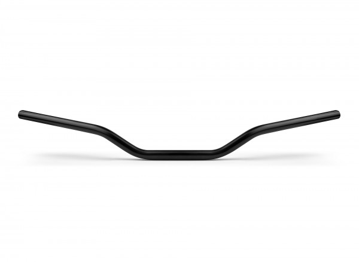
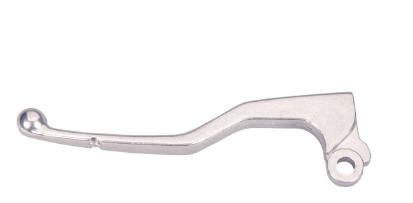
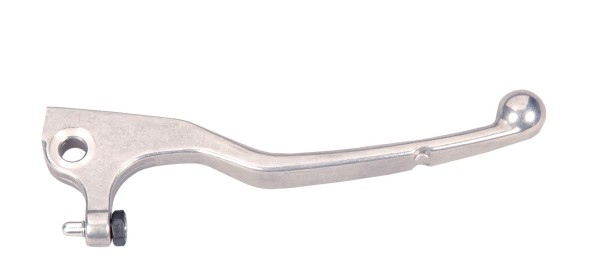

stuur en attachments
OEM stuur en onderdelen

OEM stuur
OEM Beta stuur
Dit is de standaars stuur voor Beta modellen boven 2010 beta-motor-shop.de
€ 39,99

OEM koppelinghendel
OEM Beta koppelinghendel
Dit is de standaars Beta koppelinghendel voor RR50 vanaf 2006 beta-motor-shop.de
€ 27,99

OEM handremhendel
OEM Beta handremhendel
Dit is de standaars Beta handremhendel voor RR50 vanaf 2006 beta-motor-shop.de
€ 36,99